Сайт avto-m.pro почти готов.
Что нужно от вас
Михаил Александрович, здравствуйте! Сайт по договору от 23.11.2026 сделан и проверен на компьютере и телефоне.
Чтобы мы его опубликовали и закрыли договор, осталось несколько шагов с вашей стороны. Ниже — короткий список: что сделать, зачем это нужно и как.
27 ноября 2026
Что уже готово
- Сайт в утверждённом дизайне: главная с каталогом слева, баннером и карточками разделов, каталог с фильтром, карточки товаров, подбор по автомобилю, корзина-список, сравнение, «О компании», «Контакты».
- Панель управления avto-m.pro/admin: меняете товары, ссылки на Wildberries и Ozon, тексты, баннеры, телефон, адрес — без программиста. Сначала черновик, потом «Опубликовать». Любую правку можно откатить.
- Заявки с сайта приходят на почту и сохраняются в панели. Каждые сутки автоматически делается резервная копия.
- Для поиска в Яндексе: заголовки, описания, карта сайта, превью ссылок для мессенджеров, значок сайта.
- Документы по закону о персональных данных: политика, отдельное согласие, правила cookie.
Нужно для запуска
Без этих пунктов сайт не откроется у покупателей или будет работать с нарушением закона.
- ВажноОплатить хостинг на рег.ру. Это «место», где будет работать сайт. Подойдёт любой тариф виртуального хостинга с PHP 8.1 или новее, обычно самый недорогой. При заказе укажите домен avto-m.pro. По договору тариф оплачивается отдельно.
Если удобнее, мы скажем, какой тариф выбрать, или поможем оформить заказ при созвоне.
- ВажноДать доступ к хостингу безопасным способом. Лучше всего — добавить нас доверенным лицом в личном кабинете рег.ру («Доступы» → «Доверенные лица»). Тогда пароль передавать не нужно.
Пароль от рег.ру, который был отправлен в переписке, пожалуйста, смените и включите вход с подтверждением по СМС или через приложение («Двухфакторная аутентификация»). По договору пароли передаются отдельно и защищённым способом.
- ВажноПочта на домене. На сайте указан адрес info@avto-m.pro. Его нужно создать: проще всего в почте хостинга рег.ру — она входит в тариф. Если привычнее интерфейс Яндекс Почты, подойдёт Яндекс 360 (платная подписка). Ящик создадим за 10 минут, когда будет доступ к хостингу. Без ящика с этого адреса не будут уходить письма о заявках.
Скажите, если хотите другой адрес на сайте, например zakaz@avto-m.pro.
- ВажноУведомление в Роскомнадзор об обработке персональных данных. Сайт принимает заявки с именем и телефоном, поэтому по закону нужно уведомление. Подаётся онлайн через Госуслуги на pd.rkn.gov.ru, это бесплатно. Если ИП уже есть в реестре операторов, добавьте туда сайт avto-m.pro.
Мы подготовим подсказку, что писать в каждом поле.
- ВажноПрочитать и утвердить политику и согласие (они уже на сайте: «Политика обработки данных», «Согласие на обработку»). По договору правила обработки данных определяете вы. Достаточно ответа «утверждаю» или списка правок. При сомнениях покажите юристу.
Нужно до сдачи
- НужноЯндекс Метрика и Вебмастер. Это бесплатная статистика посещений и инструмент, чтобы сайт быстрее попал в поиск Яндекса. Добавьте нас представителем в Метрике и Вебмастере, или создайте счётчик сами и пришлите его номер (только цифры).
- НужноФото упоров LIFTAUTOPRO для Ford Focus I (артикулы LAP-10995, LAP-10965, LAP-10993). Сейчас на сайте вместо них надпись «Фото скоро появится». Подойдут снимки на телефон: упор на светлом фоне, при дневном свете, без надписей и коробки.
- НужноСсылки на упоры LIFTAUTOPRO на Wildberries и Ozon — когда карточки появятся на маркетплейсах. Пока у упоров кнопка «Уточнить наличие». Ссылки вы сможете вставить сами в панели («Товары» → товар → «Где купить») или прислать нам списком.
- НужноПодтвердить три факта на сайте:
- «Больше 5 лет на рынке». ИП зарегистрировано в 2022 году. Если считаете опыт раньше — оставим, если нет — напишем «с 2022 года». За неточные сведения о продавце могут оштрафовать.
- Телефон +7 963 759-00-02 — оставить его или будет постоянный номер?
- Можно ли забрать товар самому по адресу Балашиха, Граничная, 36? Или только маркетплейсы и доставка по заявке?
- НужноЛоготипы LIFTAUTOPRO и AUTOPLASTIC (SVG, PDF, AI или PNG на прозрачном фоне). Новый логотип AVTO-M уже стоит на сайте. Если есть его векторная версия (SVG) — пришлите: будет ещё чётче.
- НужноПрава на фото. Подтвердите, что фото товаров на сайте ваши (с карточек WB, от производителя или своя съёмка) и их можно публиковать.
Желательно — сайт станет лучше
- По желанию2–3 фото склада, пункта выдачи или команды для страницы «О компании». Настоящие фото вызывают больше доверия, чем картинки.
- По желаниюАкция для окна «Не нашли нужную деталь?» Окно появляется, когда человек собирается уйти с сайта. Если есть настоящая акция, пришлите её текст, срок и промокод — поставим. Можно менять в любой момент самому.
- По желаниюСсылки на ваши магазины на Wildberries и Ozon целиком, ВКонтакте, Телеграм, MAX — появятся в подвале сайта.
- По желаниюСледующие товары — таблицей в том же формате, что и первая: фильтры, стойки стабилизатора, тормозные диски и колодки, бачки омывателя. Новые разделы появятся сами, как только в них будут товары.
- По желаниюНастоящие отзывы — скриншоты с WB и Ozon. Придумывать отзывы мы не будем, это запрещено законом.
- По желаниюЯндекс Бизнес — добавить компанию с адресом и часами работы, чтобы она появилась на Яндекс Картах. Можем сделать вместе.
Про сертификацию ссылок
Под этим обычно понимают одно из трёх. Всё уже учтено:
1. SSL-сертификат (замок в адресной строке, адрес https://). Без него браузер пишет «Не защищено», а часть ссылок и форм не работает. Сертификат бесплатный, выпускается в панели хостинга за 5 минут сразу после оплаты хостинга — это сделаем мы. Сайт уже настроен открываться только по защищённому адресу.
2. Метки переходов на Wildberries и Ozon. Чтобы в кабинетах маркетплейсов было видно, сколько покупателей пришло с сайта, к ссылкам добавляются метки. Это уже работает: метка «avto-m.pro» добавляется сама. Если в кабинете WB или Ozon вы создадите свои «ссылки для внешнего трафика», просто вставьте их в карточку товара — сайт их сохранит.
3. Маркировка рекламы (erid). Для ссылок на ваши товары на вашем собственном сайте маркировка не нужна. Она понадобится, если будете покупать рекламу сайта: Яндекс Директ, ВКонтакте, блогеры. Директ и VK Реклама маркируют сами.
Если заказчик имел в виду что-то другое — напишите, разберёмся.
Как передавать пароли и файлы
- Доступ к рег.ру — через «Доверенные лица», без пароля.
- Если пароль всё же нужен — отдельным сообщением, лучше голосом по телефону. Не в общем чате вместе с логином.
- Фото и логотипы — архивом или ссылкой на Яндекс Диск.
Что будет дальше
- Вы оплачиваете хостинг и даёте доступ — в тот же день сайт откроется на avto-m.pro с защищённым адресом.
- Мы проверяем заявки, почту и резервные копии на настоящем хостинге и отправляем сайт в Яндекс.
- Передаём вам доступ в панель управления и короткую инструкцию, по желанию показываем всё на созвоне за 20 минут.
- Подписываем акт.